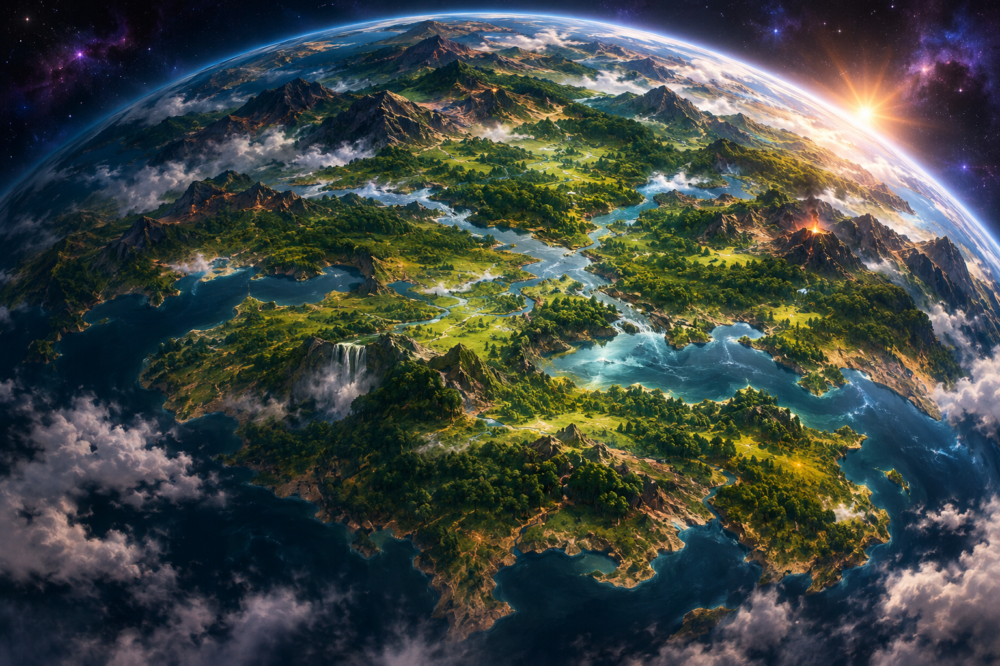

1. O nascimento do primeiro mundo
Com o surgimento das almas, uma nova necessidade apareceu: preservar a consciência.
As almas precisavam permanecer conscientes para continuar acumulando experiências. Para isso, precisavam de recipientes físicos capazes de sustentar sua existência.
Assim começou o desenvolvimento do primeiro mundo: a Grande Pangeia.
Sua estrutura dependia do alinhamento da matéria ao seu redor, que permanecia perfeitamente organizada.
2. A necessidade de preservar as almas
A própria Célula Primária respondeu à necessidade das almas criando formas de vida cada vez mais complexas.
Inicialmente, surgiram diversas plantas e organismos simples. Essas primeiras formas de vida não eram inúteis ou descartáveis. Cada uma encontrou uma função importante para manter a estabilidade do mundo.
3. A evolução vegetal
Ao longo da evolução, surgiram organismos vegetais cada vez mais desenvolvidos.
Entre eles, destacou-se o Tronco Verde, considerado o organismo mais perfeito daquela época.
O Tronco Verde foi a primeira forma de vida capaz de abrigar uma alma, permitindo que a consciência permanecesse estável por muito mais tempo do que em qualquer organismo anterior.
Entretanto, sua imobilidade representava uma limitação: não oferecia experiências suficientes para preservar a consciência indefinidamente.
O Tronco Verde possui características próprias e será apresentado em uma seção dedicada exclusivamente a ele.
4. O surgimento dos primeiros animais
Buscando oferecer experiências cada vez mais ricas às almas, a Célula Primária passou a desenvolver organismos capazes de se movimentar.
Assim nasceram os primeiros animais.
A capacidade de movimento permitia novas experiências, como exploração, sobrevivência, caça, fuga e interação.
Essas possibilidades aumentaram enormemente a quantidade de experiências que as almas podiam vivenciar.
Entretanto, com o passar do tempo, os animais também deixaram de ser suficientes.
5. O surgimento das primeiras formas humanas
A necessidade constante por experiências levou a evolução a um novo estágio.
Começaram a surgir organismos cada vez mais sofisticados, que deram origem às primeiras formas humanas.
Essas criaturas não eram exatamente iguais aos humanos conhecidos atualmente.
Eram corpos construídos para oferecer às almas uma capacidade muito maior de experimentar o mundo.
6. O amadurecimento da Grande Pangeia
Ao longo de sua existência, a Grande Pangeia passou por diferentes etapas de desenvolvimento.
As formas de vida evoluíram, os organismos tornaram-se mais complexos e as almas passaram a ter novas possibilidades de experiência.
Toda essa evolução contribuiu para a história do primeiro mundo e para os acontecimentos que, muito mais tarde, levariam à sua destruição.